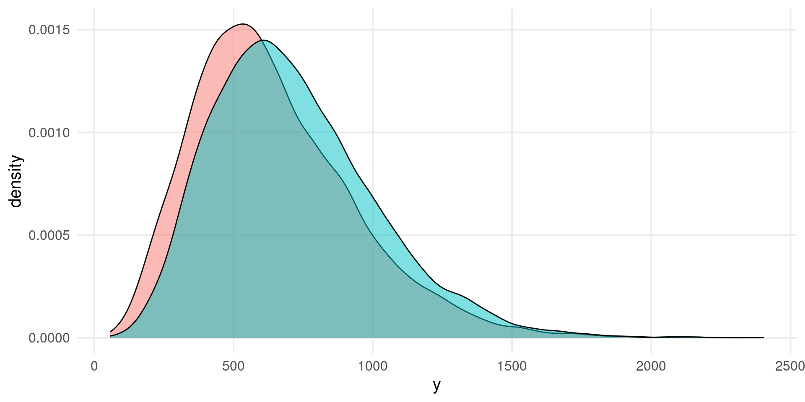
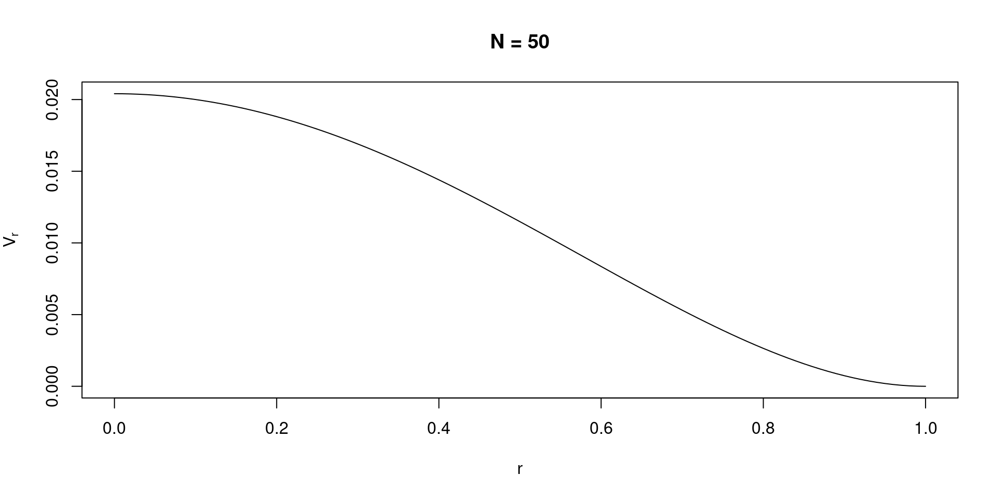

The meta-analysis is a statistical procedure to combine evidence from a group of studies.
The idea is to “switch” the statistical unit from e.g., participants to studies
The motto could be that (appropriately) combining similar studies with a similar aim is the best way to understand something about a phenomenon
Meta-analysis and Systematic Review
Usually a meta-analysis work follows these steps:
Identify the research question: is the treatment x effective?, Does the experimental effect y exist?
Define inclusion/exclusion criteria: From the research question (1), keep only e.g., randomized controlled trials, studies with healthy participants, etc.
Systematically search for studies: Analyze the literature to find all relevant studies
Extract relevant information: Read, extract and organize relevant information e.g., sample size, treatment type, age, etc.
Summarize the results: Create a narrative (flowcharts, tables, etc.) summary of included studies. This is the Systematic review part.
Choose an effect size: Choose a way to standardize the effect across included studies
Meta-analysis model: Choose and implement a meta-analysis model
Interpret and report results
Before the fun part…
We are dealing only with the statistical part. The study selection, data extraction, studies evaluation etc. is another story
The quality of the meta-analysis is the quality of included studies
Unstandardized effect sizes
The basic idea of an effect size is just using the raw measure. For example studies using reaction times we can calculate the difference between two conditions as \(\overline X_1 - \overline X_2\):

Unstandardized effect sizes
But another study (with the same research question) could use another measure, e.g., accuracy. We can still (not the best strategy but) compute the difference between the group means.
Unstandardized effect sizes
Clearly we cannot directly compare the two effects but we need to standardize the measure.
Standardized effect sizes
To compare results from different studies, we should use a common metric. Frequently meta-analysts use standardized effect sizes. For example the Pearson correlation or the Cohen’s \(d\).
The advantage of standardized effect size is that regardless the original variable, the interpretation and the scale is the same. For example the pearson correlation ranges between -1 and 1 and the Cohen’s \(d\) between \(- \infty\) and \(\infty\) and is interpreted as how many standard deviations the two groups/conditions differs.
The main difference is (usually) the absence of a effect-size-variance relationship for unstandardized effects. For example, the variance of the difference between two groups is:
In this amazing blog post James Pustejovsky explained where the equations comes from. Basically, the \(\frac{n_1 + n_2}{n_1 n_2}\) term is the same as the \(\frac{s^2_1}{n_1} + \frac{s^2_2}{n_2}\) while the extra \(\frac{d^2}{2(n_1 + n_2)}\) is for the non-centrality induced by the standardized difference.
Code
n <-c(10, 50, 100)d <-seq(0, 2, 0.001)dd <-expand.grid(n = n, d = d)dd$vumd <-with(dd, 1/n +1/n)dd$vd <-with(dd, (n + n) / (n * n) + d^2/(2* (n + n)))tidyr::pivot_longer(dd, 3:4) |>ggplot(aes(x = d, y = value, color = name, linetype =factor(n))) +geom_line() +labs(linetype ="Sample Size",color =NULL)
Effect size sampling variability
Crucially, we can calculate also the sampling variability of each effect size. The sampling variability is the precision of estimated value.
For example, there are multiple methods to estimate the Cohen’s \(d\) sampling variability. For example:
Each effect size has a specific formula for the sampling variability. The sample size is usually the most important information. Studies with high sample size have low sampling variability.
Effect size sampling variability
As the sample size grows and tends to infinity, the sampling variability approach zero.
Unstandardized effect sizes
For the examples and plots I’m going to use simulated data. We simulate unstandardized effect sizes (UMD) because the computations are easier and the estimator is unbiased (e.g., Viechtbauer 2005)
More specifically we simulate hypothetical studies where two independent groups are compared:
With \(X_{1_i} \sim \mathcal{N}(0, 1)\) and \(X_{2_i} \sim \mathcal{N}(\Delta, 1)\)
The main advantage is that, compared to standardized effect size, the sampling variability do not depends on the effect size itself, simplifying the computations.
Simulating a single study
Simulating a single study - UMD
To simulate a single study using a UMD we need to generate data according to the appropriate model. Here we have a difference between two groups. We can assume that the two groups comes from a normal distribution where group 1 \(g_1 \sim \mathcal{N}(0, 1)\) and group 2 \(g_2 \sim \mathcal{N}(D, 1)\) where \(D\) is the effect size. Then using Equations 2, 3 we can estimate the effect size and the variance.
D <-1# effect sizen <-50# sample sizeg1 <-rnorm(n, mean =0, sd =1)g2 <-rnorm(n, mean = D, sd =1)# effect sizemean(g2) -mean(g1)#> [1] 1.144216# variancevar(g1)/n +var(g2)/n#> [1] 0.0315313
Simulating a single study - UMD
For simplicity we can wrap everything within a function:
# default sd = 1sim_umd <-function(n1, n2 =NULL, D, sd =1){if(is.null(n2)) n2 <- n1 # same to n1 if null g1 <-rnorm(n1, mean =0, sd = sd) g2 <-rnorm(n2, mean = D, sd = sd) yi <-mean(g2) -mean(g1) vi <-var(g1)/n1 +var(g2)/n2data.frame(yi, vi)}sim_umd(100, D =0.5)#> yi vi#> 1 0.6376571 0.02012379sim_umd(50, D =0.1)#> yi vi#> 1 0.1772148 0.04050279
Simulating a single study - UMD
We can also generate a large number of studies and check the distribution of effect size and sampling variances. Note that the real \(D = 1\) and the real variance \(V_D = 1/50 + 1/50 = 0.04\)
studies <-replicate(1000, sim_umd(n1 =50, D =1), simplify =FALSE) # simplify = FALSE return a liststudies <-do.call(rbind, studies) # to dataframehead(studies)
The idea is the same when simulating a SDM but we need extra steps. Let’s adjust the previous function:
sim_smd <-function(n1, n2 =NULL, D){if(is.null(n2)) n2 <- n1 # same to n1 if null g1 <-rnorm(n1, mean =0, sd =1) g2 <-rnorm(n2, mean = D, sd =1) v1 <-var(g1) v2 <-var(g2)# pooled standard deviation sp <-sqrt((v1 * (n1 -1) + v2 * (n2 -1)) / (n1 + n2 -2)) yi <- (mean(g2) -mean(g1)) / sp vi <- (n1 + n2) / (n1 * n2) + yi^2/(2*(n1 + n2))data.frame(yi, vi)}
Simulating a single study - SMD
When working with SMD, calculating the sampling variance can be challenging. Veroniki et al. (2016) identified 16 different estimators with different properties. Furthermore, it is a common practice to correct the SDM effect and variance using the Hedges’s correction (Hedges 1989).
You can directly implement another equation for the sampling variance or the Hedges’s correction directly in the simulation function.
Simulating a single study - Pearson \(\rho\)
Another common effect size is the Pearson correlation coefficient \(\rho\) (and the estimate \(r\), see Equation 1). The variance of the correlation is calculated as:
\[
V_{r} = \frac{(1 - r^2)^2}{n - 1}
\]
Simulating a single study - Pearson \(\rho\)
There is a huge dependency between \(r\) and it’s sampling variance (similar to the Cohen’s \(d\)):
Code
n <-50r <-seq(0, 1, 0.01)v <- (1- r^2)^2/ (n -1) plot(r, v, type ="l", main ="N = 50", xlab ="r", ylab = latex2exp::TeX("$V_r$"))

Simulating a single study - Pearson \(\rho\)
For this reason the so-called Fisher’s \(z\) transformation is used to stabilize the relationship.
\[
z = \frac{\log{\frac{1 + r}{1 - r}}}{2}
\]
\[
V_z = \frac{1}{n - 3}
\]
Now the variance is completely independent from the correlation value.
Simulating a single study - Pearson \(\rho\)
This is the relationship between \(r\) and \(z\):
Code
n <-50r <-seq(-1, 1, 0.01)v <- (1- r^2)^2/ (n -1) z <-log((1+ r)/(1- r))/2plot(z, r, type ="l", xlab ="Fisher's z", ylab ="Correlation", main ="Correlation to Fisher's z")
Simulating a single study - Pearson \(\rho\)
To simulate a study using correlations we can use the MASS::mvrnorm() function that can generate correlated data from a multivariate normal distribution.
sim_r <-function(n, r){ R <- r +diag(1- r, nrow =2) # 2 x 2 correlation matrix X <- MASS::mvrnorm(n, mu =c(0, 0), Sigma = R) # the means are not relevant here r <-cor(X)[1, 2] # extract correlation vr <- (1- r^2)^2/ (n -1) # variance of r yi <-log((1+ r)/(1- r))/2# fisher z vi <-1/ (n -3) # fisher z variancedata.frame(yi, vi, r, vr) # including also the pearson correlation and variance}
Simulating a single study - Pearson \(\rho\)
sim_r(100, 0.5)#> yi vi r vr#> 1 0.5423733 0.01030928 0.4947824 0.005760733sim_r(50, 0.8)#> yi vi r vr#> 1 1.112524 0.0212766 0.8049527 0.002529387# also here the sampling distributionsstudies <-replicate(1000, sim_r(50, 0.7), simplify =FALSE)studies <-do.call(rbind, studies)summary(studies)#> yi vi r vr #> Min. :0.4038 Min. :0.02128 Min. :0.3832 Min. :0.0009468 #> 1st Qu.:0.7722 1st Qu.:0.02128 1st Qu.:0.6482 1st Qu.:0.0039246 #> Median :0.8672 Median :0.02128 Median :0.6999 Median :0.0053101 #> Mean :0.8686 Mean :0.02128 Mean :0.6929 Mean :0.0056097 #> 3rd Qu.:0.9714 3rd Qu.:0.02128 3rd Qu.:0.7493 3rd Qu.:0.0068618 #> Max. :1.4020 Max. :0.02128 Max. :0.8858 Max. :0.0148543
More on effect sizes
The same logic can be applied to any situation. Just understand the data generation process, find the effect size equations and generate data.
Borenstein et al. (2009) for all effect sizes equations. Also with equations to convert among effect sizes (useful in real-world meta-analyses)
the metafor::escalc() function implements basically any effect size. You can see also the source code to see the actual R implementation.
The previous simulation examples are participant-level simulations. In fact we simulated \(n\) observations then we aggregated calculating the effect sizes.
This is the most flexible and general data simulation strategy but is computationally not efficient.
Another strategy individuate the exact effect size sampling distribution. Then we can sample directly from it. The downside is that we need to derive (or find) the equation.
Simulating from sampling distributions [#extra]
For example, when generating UMD we can simulate from the sampling distribution presented in Section 2.4.
We can compare the two methods and see that we are sampling from the same data generation process.
Code
k <-1e4s_umd <-sim_k_umd(k, D =1, n1 =50)ip_umd <-replicate(k, sim_umd(n1 =50, D =1), simplify =FALSE)ip_umd <-do.call(rbind, ip_umd)
Simulating from sampling distributions [#extra]
The actual advantage is in terms of computational speed. To simulate \(k = 10\) studies for 1000 times (similar to a standard Monte Carlo simulation):
bench <- microbenchmark::microbenchmark(sampling =sim_k_umd(k =10, n1 =50, D =1),participant =replicate(10, sim_umd(n1 =50, D =1)),times =1000)(bench <-summary(bench))#> expr min lq mean median uq max neval cld#> 1 sampling 119.705 128.030 153.3401 137.698 152.116 642.825 1000 a #> 2 participant 1533.806 1586.821 1850.0177 1634.110 1831.505 10557.359 1000 bbench$mean[2] / bench$mean[1] # faster#> [1] 12.0648
References
Borenstein, Michael, Larry V Hedges, Julian P T Higgins, and Hannah R Rothstein. 2009. “Introduction to Meta-Analysis.”https://doi.org/10.1002/9780470743386.
Hedges, Larry V. 1989. “An Unbiased Correction for Sampling Error in Validity Generalization Studies.”The Journal of Applied Psychology 74 (June): 469–77. https://doi.org/10.1037/0021-9010.74.3.469.
Veroniki, Areti Angeliki, Dan Jackson, Wolfgang Viechtbauer, Ralf Bender, Jack Bowden, Guido Knapp, Oliver Kuss, Julian P T Higgins, Dean Langan, and Georgia Salanti. 2016. “Methods to Estimate the Between-Study Variance and Its Uncertainty in Meta-Analysis.”Research Synthesis Methods 7 (March): 55–79. https://doi.org/10.1002/jrsm.1164.
Viechtbauer, Wolfgang. 2005. “Bias and Efficiency of Meta-Analytic Variance Estimators in the Random-Effects Model.”Journal of Educational and Behavioral Statistics: A Quarterly Publication Sponsored by the American Educational Research Association and the American Statistical Association 30 (September): 261–93. https://doi.org/10.3102/10769986030003261.